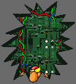

| Tech Info |
| How to tweak the game from the inside. |
| Did you ever want to change Drakkar's music? That little tune got in your head and it won't come out? No Problem! Change the music this way... First find some MIDI music you do like. Rename the MIDI file 1 of these 4 names: Town, Fight, Dungeon or Forest. Open windows explorer or equivilent and put your new tune in the folder: Drive:/Drakkar/Music Simple. |
| Back to Bits of Info. |
 |